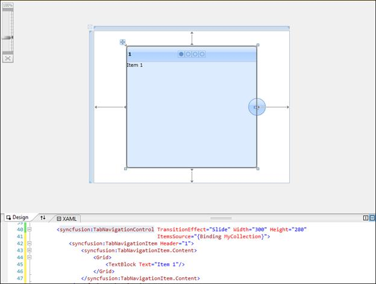

To add Tab navigation control to a Visual Studio.NET project:
3. Open a VS2010 project. The Syncfusion controls are listed in the toolbox.

Figure 1025: Syncfusion Controls
4. Click and drag the Tab Navigation control from the toolbox and drop it in the designer.

Figure 1026: Tab Navigation Control in Designer
5. Syncfusion.Tools.WPF and Syncfusion.Shared.WPF assemblies will be added automatically to the application reference.

Figure 1027: Assemblies added to References
6. Press F4 or open the properties window to customize the control by setting the required properties.

Figure 1028: Customization using Properties Window
7. Add Items to the control manually or through Items Source property.
8. Press F5 to run the application.

Figure 1029: The Output
To enable transition effects, items should be added to the control. The following sections explain the methods through which you can add items.